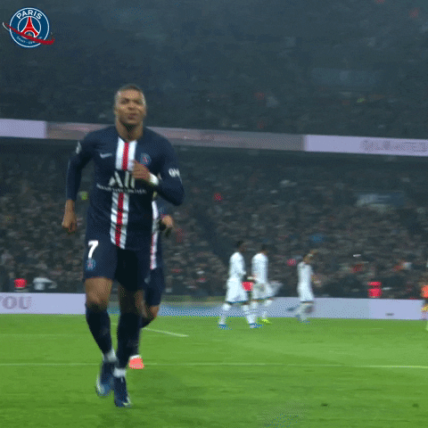
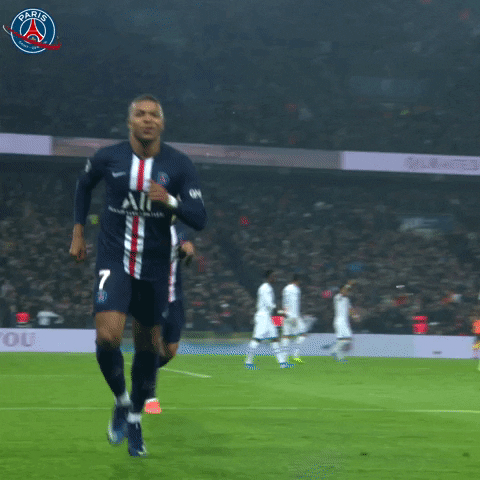
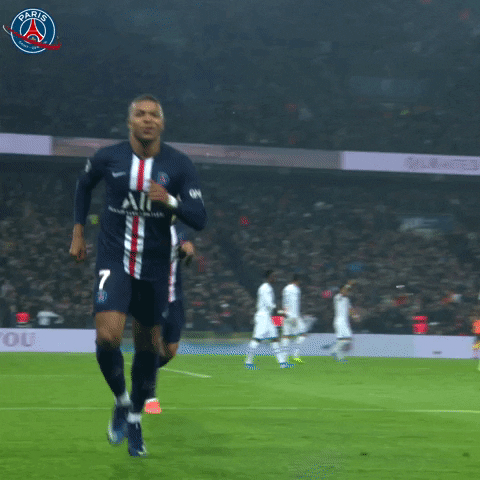

Ronaldo’s father, José Dinis Aveiro, was the equipment manager for the local club Andorinha. (The name Ronaldo was added to Cristiano’s name in honour of his father’s favourite movie actor, Ronald Reagan, who was U.S. president at the time of Cristiano’s
birth.) At age 15 Ronaldo was diagnosed with a heart condition that necessitated surgery, but he was sidelined only briefly and made a full recovery. He first played for Clube Desportivo Nacional of Madeira and then transferred to
Sporting Clube de Portugal (known as Sporting Lisbon), where he played for that club’s various youth teams before making his debut on Sporting’s first team in 2002.
Messi
Messi was born on 24 June 1987 in Rosario, Santa Fe,[14] the third of four children of Jorge Messi, a steel factory manager, and his wife Celia Cuccittini, who worked in a magnet manufacturing workshop. On his father's side, he is of Italian
and Spanish descent, the great-grandson of immigrants from the north-central Adriatic Marche region of Italy, and on his mother's side, he has primarily Italian ancestry.[3] Growing up in a tight-knit, football-loving family, "Leo"
developed a passion for the sport from an early age, playing constantly with his older brothers, Rodrigo and Matías, and his cousins, Maximiliano and Emanuel Biancucchi, both of whom became professional footballers.[15] At the age
of four he joined local club Grandoli, where he was coached by his father, though his earliest influence as a player came from his maternal grandmother, Celia, who accompanied him to training and matches.[16] He was greatly affected
by her death, shortly before his eleventh birthday; since then, as a devout Catholic, he has celebrated his goals by looking up and pointing to the sky in tribute to his grandmother.
Mbape

Kylian's footballing talent was evident from a very young age, and he quickly gained a reputation as a prodigious young talent. Mbappé began his career with the local club AS Bondy before making a move to Ligue 1 side AS Monaco in 2013. There, he made
his professional debut at the young age of 16. The Frenchman swiftly made a mark with the southern French club. His lightning-quick pace (he has been measured as fast as 38 km/h) and goal-scoring ability played a pivotal role in Monaco's
unlikely Ligue 1 title triumph in 2017 and their journey to the UEFA Champions League semifinals.
Neymar
He was born in Mogi das Cruzes, São Paulo, to Neymar Santos Sr. and Nadine da Silva and had a Christian upbringing.[18][19] He inherited his name from his father, who is a former footballer and became his son's advisor as Neymar's talents began to grow.[20]
Neymar comments on his father's role: "My father has been by my side since I was little. He takes care of things, my finances and my family."[21] Growing up, Neymar combined his love of futsal with street football.[22] Neymar said
that futsal had a massive influence on him growing up, helping him develop his technique, speed of thought and ability to perform moves in tight spaces.


 
